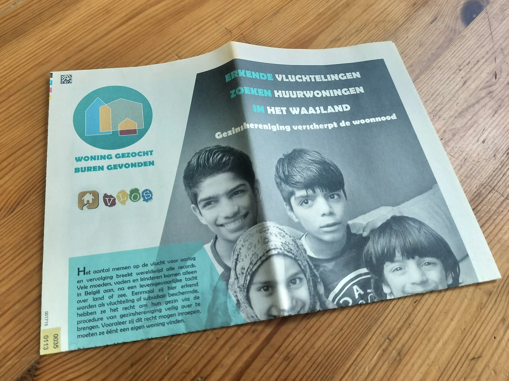
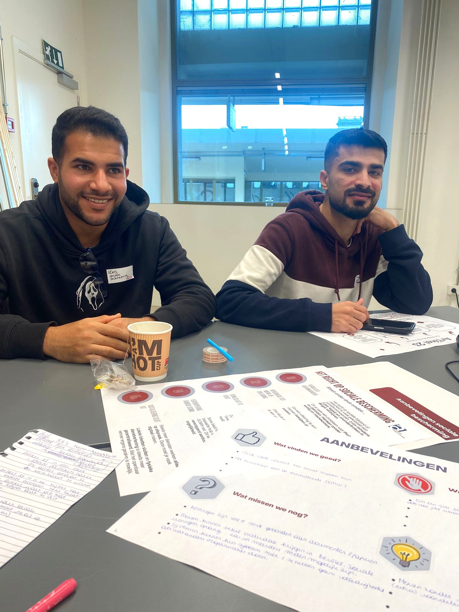

Nieuwsbrief
Benieuwd naar het reilen en zeilen in VLOS? Het dagelijkse leven, maar ook activiteiten en een scherpe blik op het beleid? Schrijf je dan in voor onze nieuwsbrief!

Dialoog
VLOS is een Vereniging waar armen het woord nemen. We trekken met de stem van mensen in armoede naar het beleid.
We signaleren pijnpunten en gaan in dialoog.